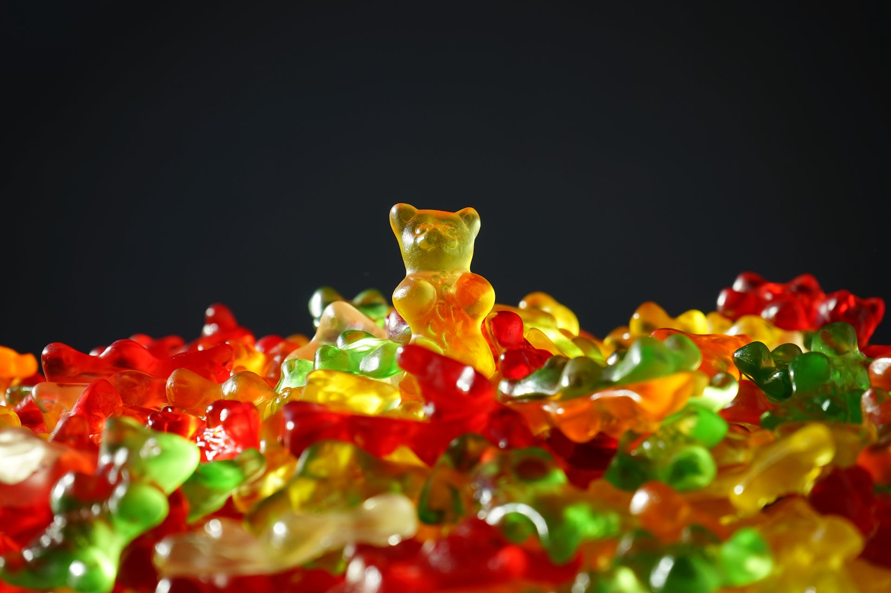

Sure, here's a simple recipe for homemade jelly bears, a delightful treat loved by both kids and adults.
Ingredients
1 cup fruit juice (choose a juice with a flavor you like, such as grape, apple, or cherry)
2 tablespoons gelatin powder
2-3 tablespoons honey or maple syrup (adjust to taste)
1/2 teaspoon vanilla extract (optional)
Gummy bear molds

Instructions
1.Prepare Gummy Bear Molds
Make sure your gummy bear molds are clean and dry. If they are silicone molds, there's usually no need
to grease them.
2.Mix Fruit Juice and Gelatin
In a small saucepan, pour the fruit juice. Sprinkle the gelatin evenly over the surface of the juice and
let it sit for a few minutes to bloom.
3.Heat the Mixture
Heat the saucepan over low heat, stirring continuously until the gelatin completely dissolves. Do not
let it boil; you just want it warm enough to melt the gelatin.
4.Sweeten the Mixture
Add honey or maple syrup to the warm juice and gelatin mixture. Adjust the sweetness according to your
preference. Stir until well combined.
5.Optional: Add Vanilla Extract
If desired, add vanilla extract for extra flavor. Stir well.
6.Fill the Molds
Using a dropper or a small spoon, carefully fill each cavity of the gummy bear molds with the liquid
mixture.
7.Remove Air Bubbles
Gently tap the molds on the counter to remove any air bubbles and ensure that the mixture settles
evenly.
8.Chill and Set
Place the filled molds in the refrigerator for at least 2-3 hours, or until the gummy bears are
completely set.
9.Remove from Molds
Once set, carefully pop the gummy bears out of the molds. If they are stubborn, you can place the molds
briefly in the freezer to help release them.
10.Store
Store the homemade jelly bears in an airtight container in the refrigerator. They should last for about
a week.
Feel Good to experiment with different fruit juice flavors and sweeteners to create a variety of jelly
bears. Enjoy your delicious homemade gummy treats!😋.